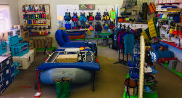
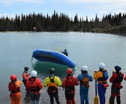
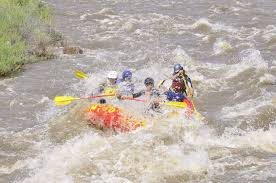

Rafting Safety
Make Memories with Dry Oar
Safety Gear and Equipment
Proper safety gear and equipment are essential in white water rafting to ensure the well-being of all participants. The most critical piece of equipment is the personal flotation device (PFD), commonly known as a life jacket. This must be worn at all times and properly fitted to provide adequate buoyancy in the event of a fall into the water. Helmets are also crucial, protecting against head injuries from rocks or the raft itself. In addition to these, paddlers should wear suitable footwear that can provide traction on slippery surfaces and protect feet from sharp objects. Ensuring that all gear is in good condition and properly worn significantly reduces the risk of injury during a rafting expedition.
Training and Preperation
Comprehensive training and preparation are vital for a safe white water rafting experience. This includes both pre-trip briefings and hands-on training sessions. Before hitting the water, guides should conduct thorough safety briefings covering paddling techniques, commands, and emergency procedures. Practicing these skills on calm water helps participants become familiar with the commands and their roles within the team. Additionally, understanding how to respond in case of capsizing or being thrown overboard can make a significant difference in the outcome of an accident. Well-prepared rafters are more likely to react calmly and effectively in challenging situations.
Enviroment Awareness
Environmental awareness is another critical aspect of white water rafting safety. Understanding and respecting the natural elements, such as river flow, water levels, and weather conditions, is essential for making informed decisions. Rafters should be aware of potential hazards like rocks, waterfalls, and sudden drops. Monitoring weather forecasts and water conditions can help prevent accidents caused by unexpected changes, such as flash floods or rising water levels. Additionally, being mindful of the environment ensures that the river and its surroundings are preserved for future enjoyment, promoting a sustainable and safe rafting experience.
